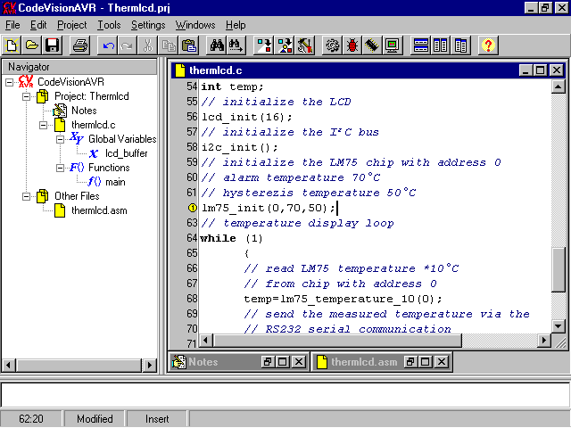

Compilateur C SDCC — Small Device C Compiler
SDCC est un compilateur C pour microcontrôleurs de la famille MCS51 (Intel, Atmel, Dallas, Siemens...) entièrement gratuit. Dans le domaine des compilateurs C, gratuit signifie souvent limité. Même s'il n'y a pas encore d'environnement IDE, comme celui de Rigel, il est complètement utilisable, mais il faudra créer des fichiers .bat pour « automatiser » la compilation. Il existe des versions différentes suivant les systèmes d'exploitation.
SDCC est téléchargeable à l'adresse : http://sourceforge.net/projects/sdcc/
Merci à ses développeurs qui mettent à notre disposition cet excellent compilateur.
Freeware CodeVision AVR

Ce compilateur C CodeVision AVR (freeware), comme l'illustre la photo, fonctionne dans un environnement IDE ; le nombre de lignes de programme est limité. Il permet cependant aux débutants qui souhaitent utiliser les µC Atmel de découvrir un compilateur C. Le prix du produit sans limitation est abordable pour un développeur privé, c'est pour cette raison qu'il est présenté ici. Il est regrettable pourtant qu'il ne permette pas de travailler avec les µC MCS51.
Il est distribué et téléchargeable sur le site de la société HP InfoTech : http://infotech.ir.ro/
À tester.